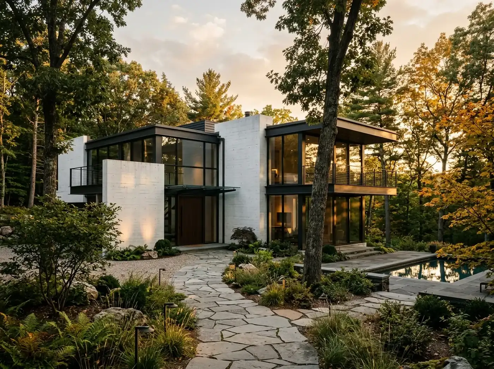
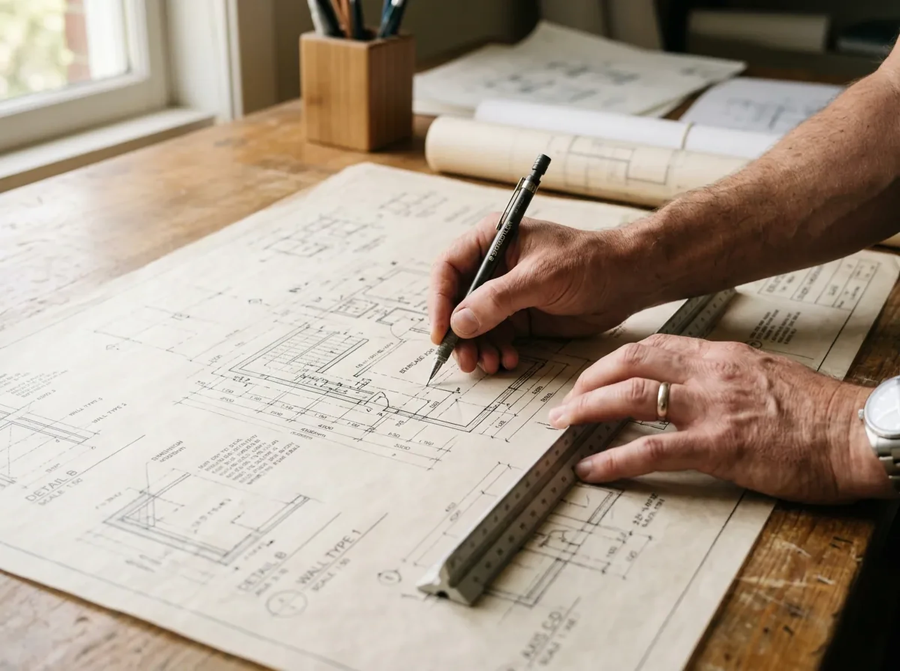
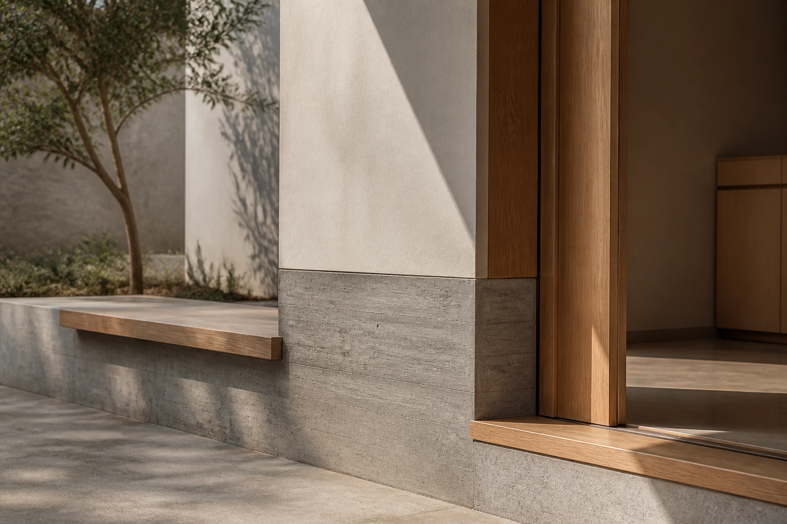
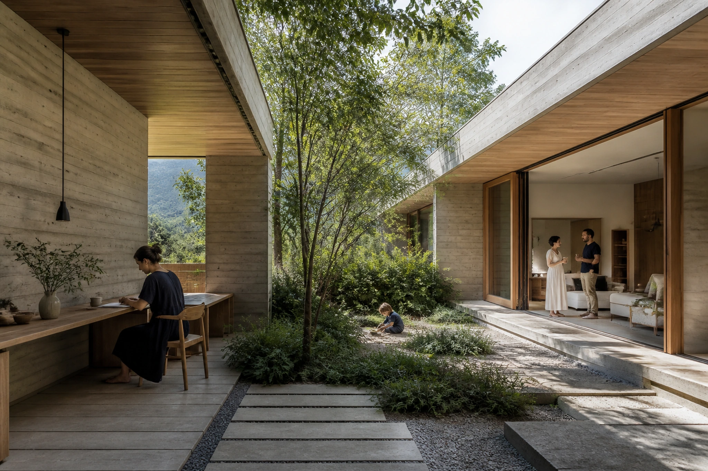
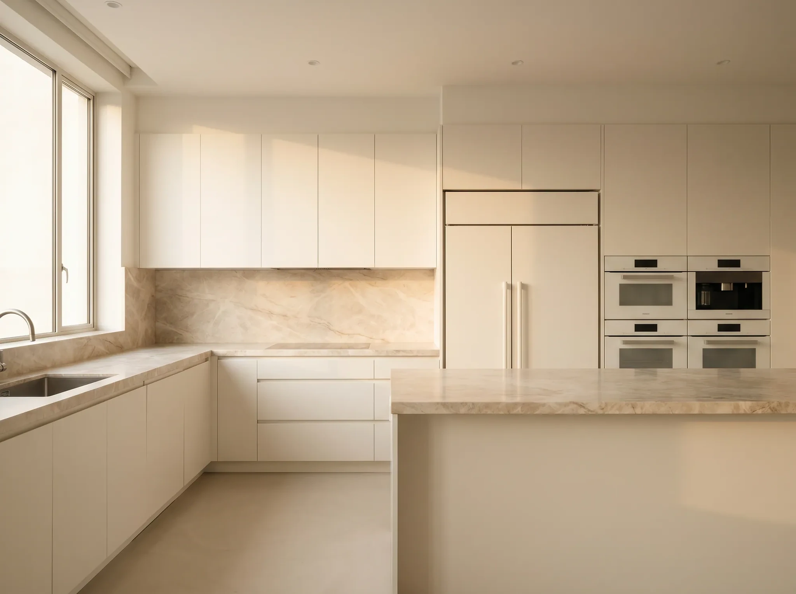
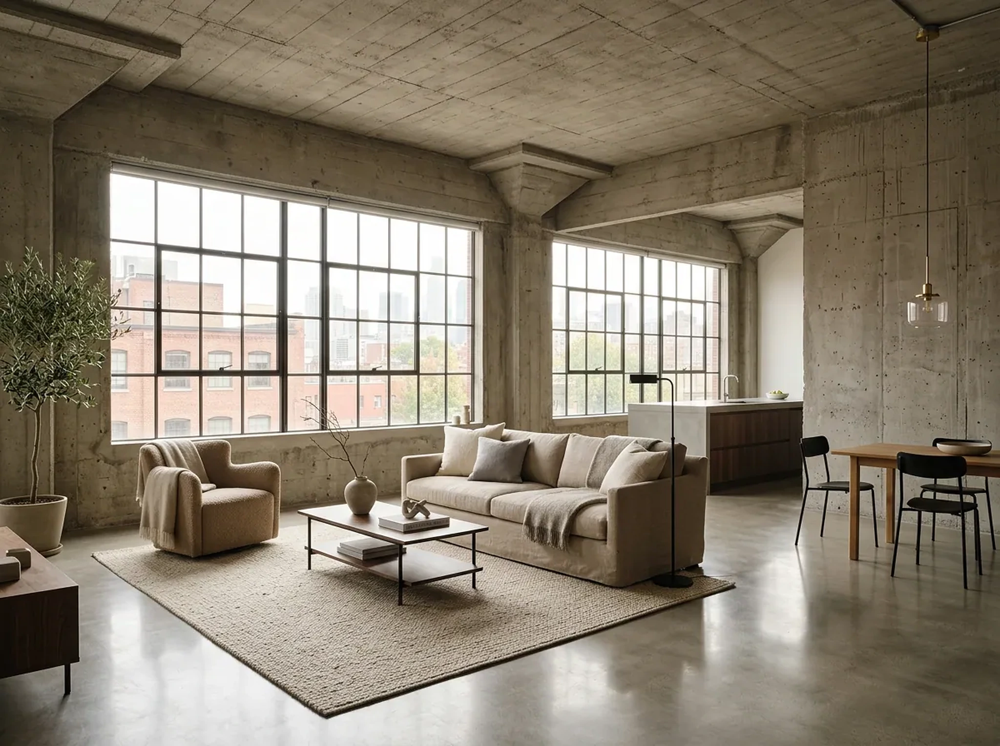
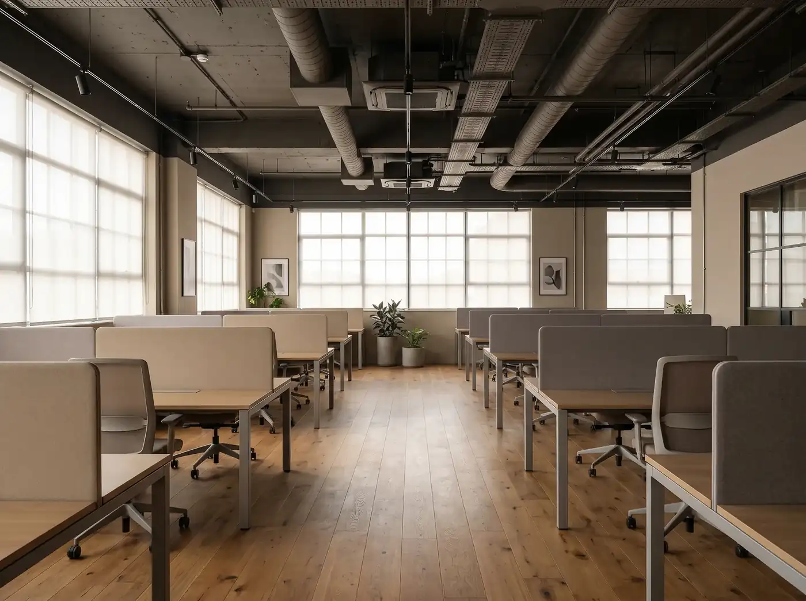
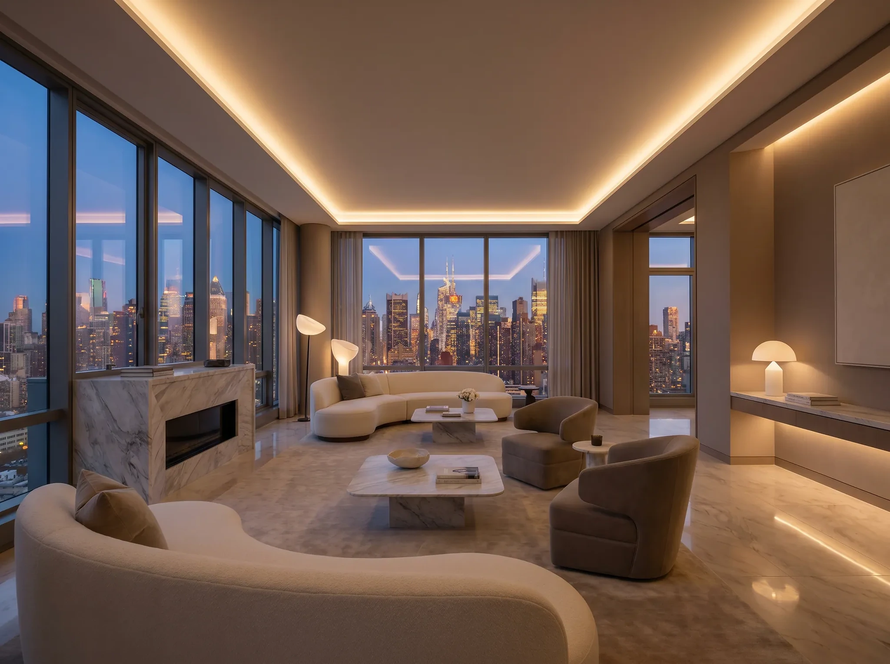
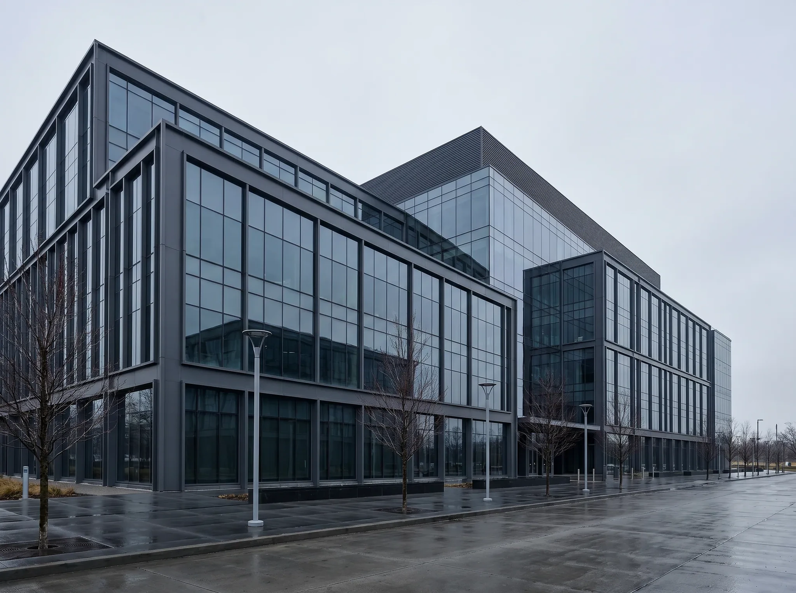
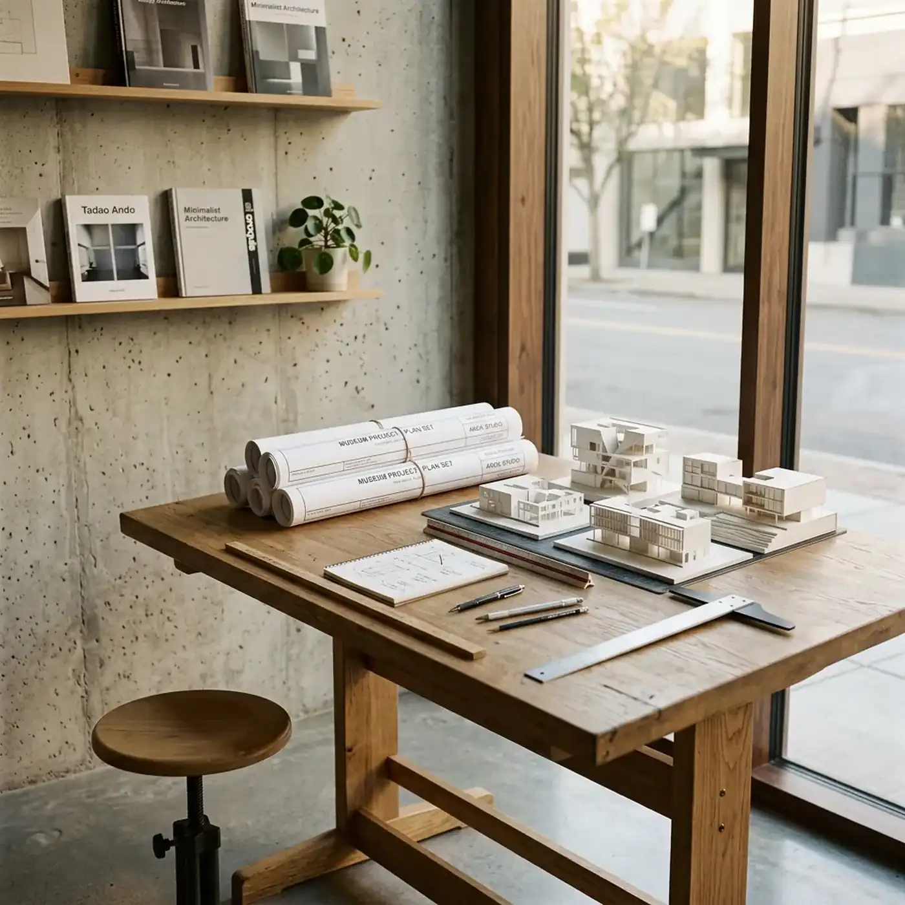

RESIDENTIAL / CONCEPT STUDYOne roof. Three thresholds.
The drawing is not the project. The life inside it is.
We test architecture against movement, privacy, daylight, maintenance and cost before an image becomes precious.
Start with
site, brief, budget and approvals
Test through
plan, section, model and material sample
Resolve for
construction, use and long-term care
FEATURED STUDY / P—06
A house understood four ways.




01 / BRIEF02 / PLAN03 / MATERIAL04 / USE
Privacy without retreat.One loop, no dead corridor.Three materials carry the whole house.The court changes with the day.
The client needed quiet from the street and openness to the garden. The plan bends around a protected court instead of hiding behind a closed façade.Living, work and guest spaces form a continuous route around the court; thresholds widen where people naturally pause.Board-marked concrete holds the ground, warm timber marks touch, and pale plaster carries changing daylight.Morning work, afternoon play and evening gathering share one protected centre without making every room public.
Type
Private residence
Decision
Court as social centreContinuous inhabited loopMaterial follows contactPrivacy by time and threshold
Status
Portfolio concept
Constraints make the first drawing.
Before form, the project is a field of facts. The demonstrative P—06 study turns four of them into one inhabitable section.
STREET / NOISESOUTH LIGHTGARDEN / OPEN EDGESHELTERED COURTSECTION A—A / CONCEPT
01Shield the street edge
02Open rooms to the garden
03Use the court as social centre
Three materials. Three jobs.
A short palette gives each material a spatial responsibility instead of turning specification into decoration.

INTERIOR STUDY / PORTFOLIO CONCEPT
01 / GROUNDBoard-marked concrete
Thermal mass and a durable base at the court.
02 / TOUCHWarm timber
Joinery, thresholds and surfaces held by hand.
03 / LIGHTPale mineral plaster
A quiet field for daylight to change across.
Light is scheduled by the section.
The same court behaves differently across the day. Roof depth, opening height and material reflectance are tested together.
Low east light reaches the kitchen threshold.Roof depth protects the shared room from glare.The court borrows warmth from internal surfaces.
Selected work, named by its central decision.
No moodboard without a reason. Each project starts with one spatial proposition that guides hundreds of smaller choices.

Loft / Vertical CommonsA stair that works as a room.

Office / Visible CollaborationFocus at the edge, exchange at the centre.

Penthouse / Long HorizonCirculation aligned to the view.

WORKPLACE / PORTFOLIO CONCEPT
One workplace, read from edge to centre.
Focused work sits beside the façade and daylight. Shared tables, review walls and short meetings collect along a central route. The plan makes collaboration visible without making every desk public.
Constraint
Deep existing floorplate
Section move
Open ceiling over the shared spine
Use test
Quiet edge / active centre
Status
Portfolio concept
One team from feasibility to the final junction.
We combine architectural planning, interior design and delivery coordination. The precise scope is fixed in the proposal; specialist engineering and statutory approvals remain with named project partners.

Architecture
feasibility, concept, planning and technical coordination
Interiors
spatial planning, joinery, lighting and material specification
Delivery
tender support, site observations and design intent reviews
Good coordination names every boundary.
The appointment defines who authors, who advises and who approves. This illustrative matrix is a conversation tool, not a promise of a fixed universal scope.
Spatial conceptPREZFULLclient approves
Structure & servicesSPECIALIST CONSULTANTScoordinated with design
Statutory approvalsLOCAL TEAM / AUTHORITYroute confirmed per project
Construction methodCONTRACTORreviewed against intent
A clear sequence leaves room for discovery.
01Frame
site, constraints, budget, ambition
02Test
options before attachment
03Resolve
plan, section, material logic
04Coordinate
consultants and approvals
05Specify
details and tender information
06Observe
construction against intent
Every stage ends with something you can review.
Architecture becomes easier to trust when each phase has a visible outcome and a clear approval point.
FRAMEProject brief + constraint map
What must the project solve?
TESTOptions + comparative section
Which direction earns development?
RESOLVECoordinated plans, sections and material logic
Does the design work as one system?
SPECIFYDetails + tender information
Is the design clear enough to price and build?
OBSERVESite records + design-intent reviews
Are decisions carried into construction?
The client is part of the design instrument.
Approval is not a reveal at the end. Short, prepared conversations keep brief, budget and ambition aligned as the project gains detail.
BEFOREIssue one focused question
Share only the material needed for the next decision.
IN THE ROOMCompare, annotate, decide
Record what changed and why.
AFTERConfirm the consequence
Update brief, programme and responsibility.
A useful first meeting starts with the difficult facts.
What does the site already allow?
Location, planning context, access, orientation and existing information shape the first feasibility work.
What is fixed — and what may move?
Budget, programme, area, procurement and non-negotiable uses should be explicit before options multiply.
Who approves each stage?
Name the client decision-makers and the information they need before the project proceeds.
Which specialists are already involved?
Engineering, planning, cost and local delivery roles affect scope and coordination from the beginning.
Start with the constraints.
This local portfolio form prepares a project summary; it does not send data.